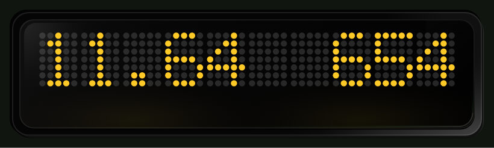
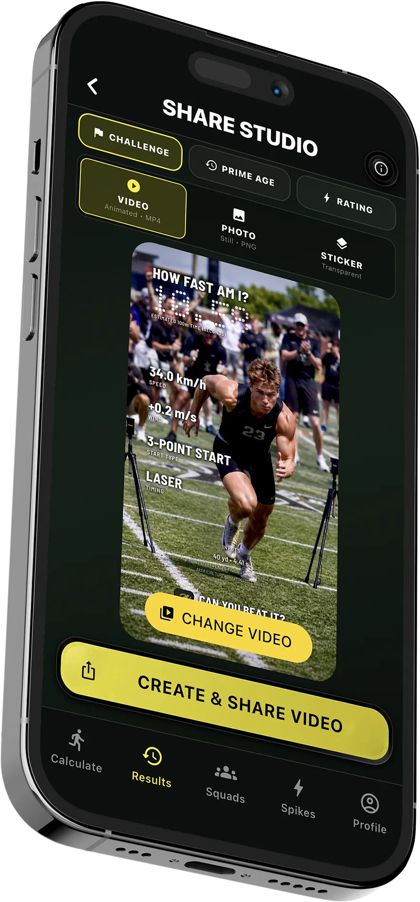

Convertir un sprint con tiempo
Empieza con distancia y tiempo. Para más contexto, añade tu tipo de inicio, método de cronometría, superficie, calzado, viento o altitud.
Convertidor de tiempo de sprint
¿Cronometraste un sprint de 30 m, 60 m u otra distancia? Introduce la distancia y el tiempo para estimar qué marca podrías hacer en 100 m. Añade detalles sobre la salida, el cronometraje y la superficie para ajustar la estimación.
No reloj deportivo necesario. Comienza con una distancia y un tiempo.

Utiliza una estimación de 100 m para colocar sprints más cortos en una escala común y rastrear cómo cambian tus rendimientos con el tiempo.
Empieza con distancia y tiempo. Para más contexto, añade tu tipo de inicio, método de cronometría, superficie, calzado, viento o altitud.
Encuentra tu velocidad promedio en mph o km/h, luego ponla en contexto con una puntuación de velocidad, comparaciones ajustadas por edad, y resultados compartibles.
Recrute atletas, forma tu equipo de relays, desarrolla atributos, persigue tus mejores tiempos, sube las clasificaciones, y recopila insignias a lo largo del camino.
Añade la distancia y el tiempo que registraste. Usa el modo Simple para una estimación rápida.
En modo Detallado, indique cómo comenzó la aplicación y cómo se activó el reloj. Un start en vuelo le da una carrera de aceleración, mientras que un start en pie incluye la aceleración desde el reposo.
Utilice la estimación para comparar saltos en diferentes distancias y rastrear su progreso.

Ejemplo: 60 m en 7,50 segundos equivalen a un tiempo estimado de 11,64 segundos en 100 m.
En el modo «Competicion de atletismo», selecciona «Masculino» e introduce 60 m y 7,50 segundos. Indica salida con tacos, cronometraje electrónico, zapatillas de clavos, pista de caucho seca y viento de 0. Deja en blanco la edad y la altitud.
Los 11,64 segundos son una proyección. Para obtener una marca oficial de 100 m, hay que correr una prueba cronometrada de 100 m.



Una forma de usarlo
En un sprint de 40 yardas en 4,50 segundos, la velocidad media es de 18,2 mph (29,3 km/h) a lo largo de toda la distancia. Usa el modo de 40 yardas para estimar tu tiempo en 100 m teniendo en cuenta el cronometraje y las condiciones.


Comparta su salto
Guarda el resultado de tu sprint como un sticker transparente y colócalo sobre tu propia foto o video. Después, compártelo en una historia de Instagram o publícalo en TikTok. También puedes guardar el resultado como un video independiente.


Corrida de equipo
Forma un equipo de relámpago con fortalezas complementarias. Gestiona el estado, afina los cambios de relé, maneja las condiciones de la carrera y descubre si tus cuatro pueden entregar cuando se lo pide.
Listo cuando estés listo
Trae la distancia y el tiempo de tu próxima carrera.